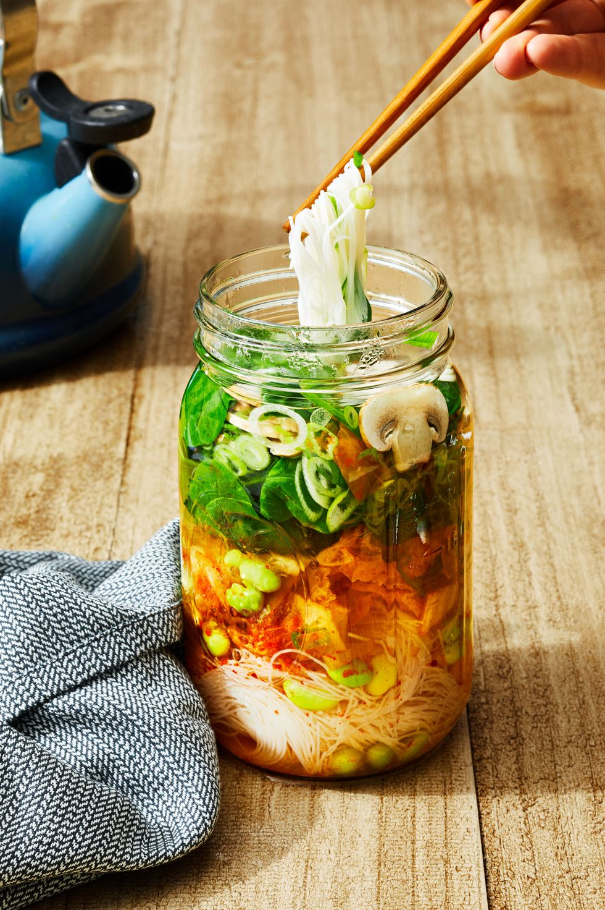

Mason Jar Instant Noodle Soup

Yields
1 serving(s)
Cal/Serv.
229
Benefits
- Source of carbs
- Fulfills protein needs
- Veggies provides fiber
Mason Jar Instant Noodle Soup

Yields
1 serving(s)
Cal/Serv.
210
Benefits
- Source of Protein
- Low in calorie
- Veggies provides fiber
Mason Jar Instant Noodle Soup

Yields
1 serving(s)
Cal/Serv.
310
Benefits
- Source of protein
- Good in carbs
- Veggies provides fiber